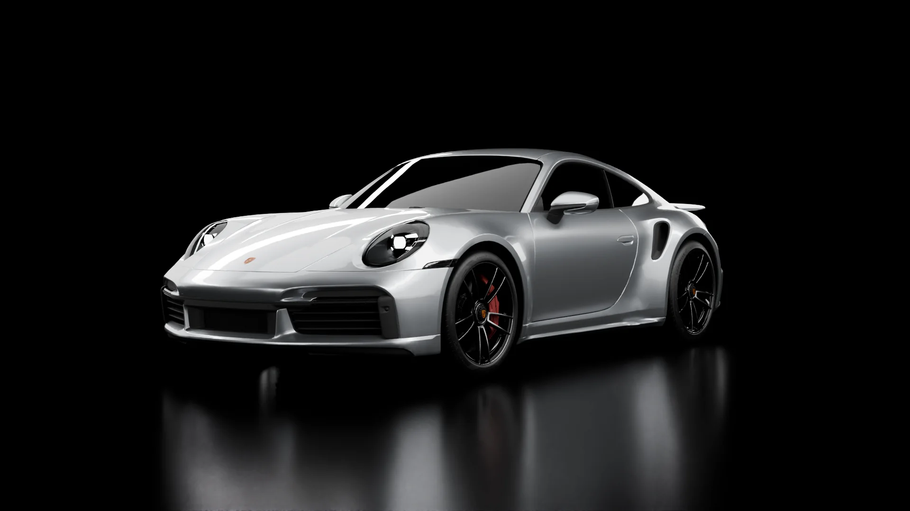

Ukázka · Whyte Lynx
Projeďte si ho celý, kolem dokola a pak dovnitř.
Posouvejte dolůOd světlometů po záď, na výšku jen 1 303 mm.
Záď je široká 1 900 mm a motor je hned za ní.
Dál už se jede zevnitř.
Uprostřed otáčkoměr, po stranách dva displeje.
Střední obrazovka, pod ní řada přepínačů a volič převodovky.
Technika

Stříbrná metalíza
O ukázce
Celou jízdu tvoří 260 předem připravených obrázků, které se přehrávají podle posunu stránky. Díky tomu běží plynule na počítači i na telefonu.
Místo auta může být Váš výrobek, provozovna nebo dům. Vzhled, barvy i texty jsou jen ukázka a dají se předělat podle toho, co prodáváte.
Chci podobnou stránku